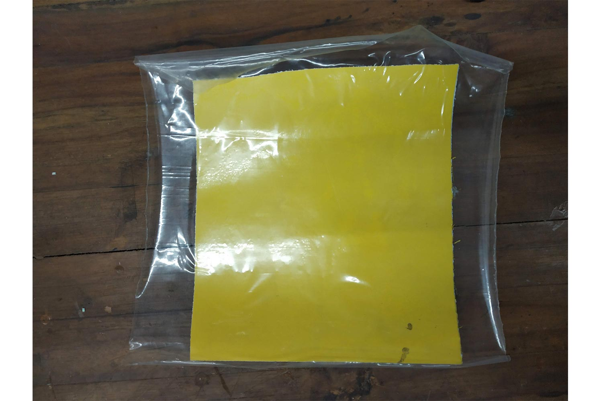
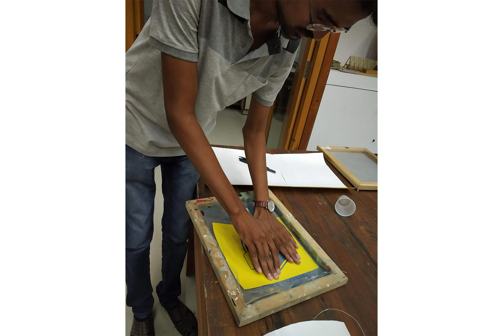
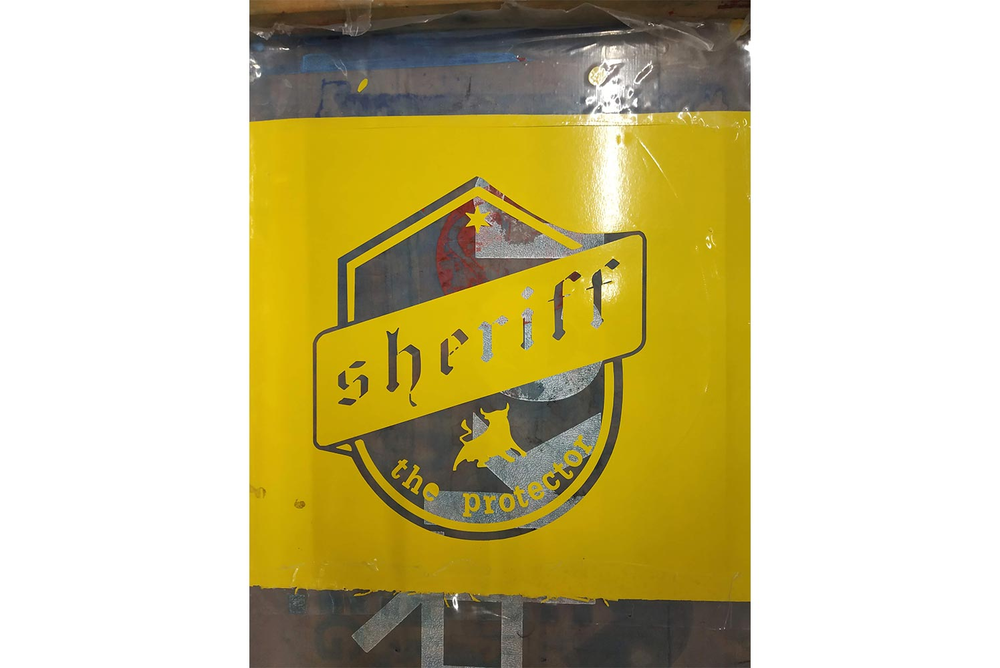
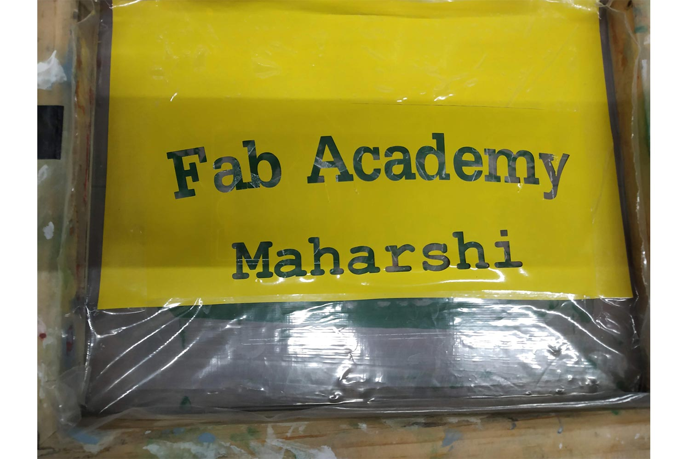
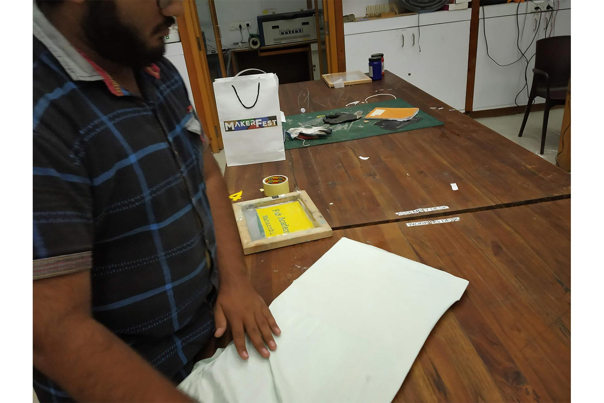
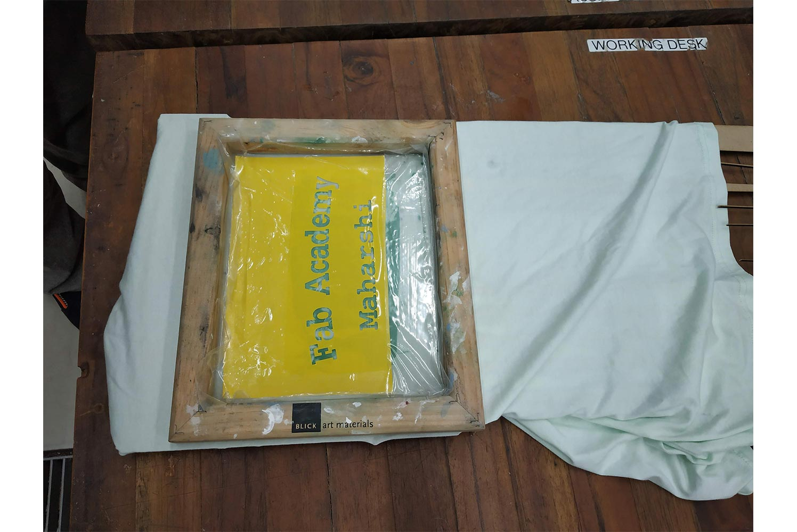
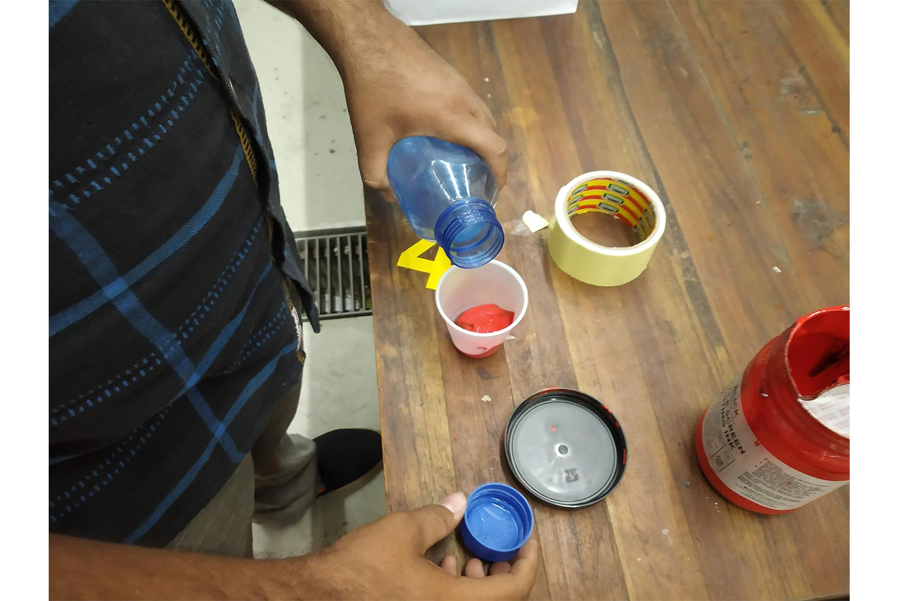
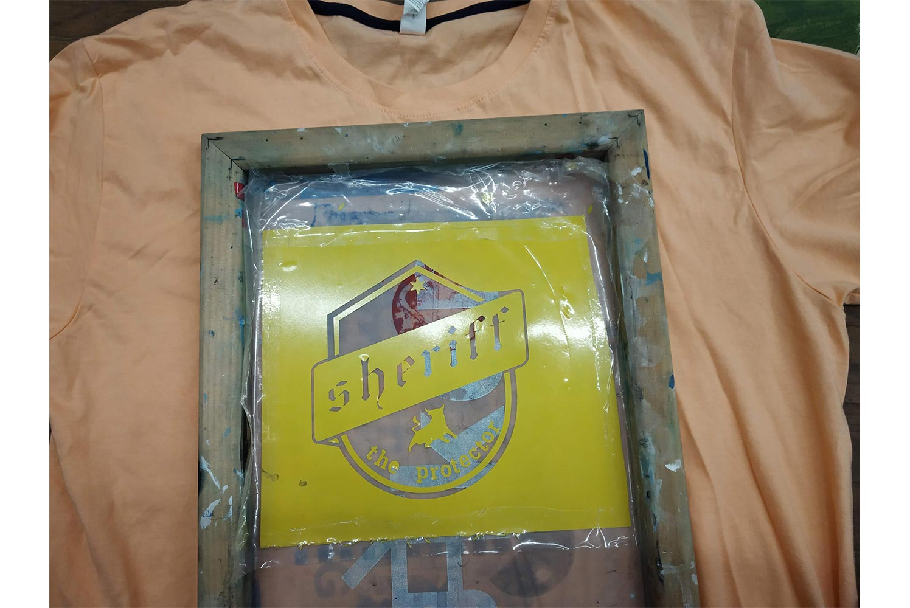
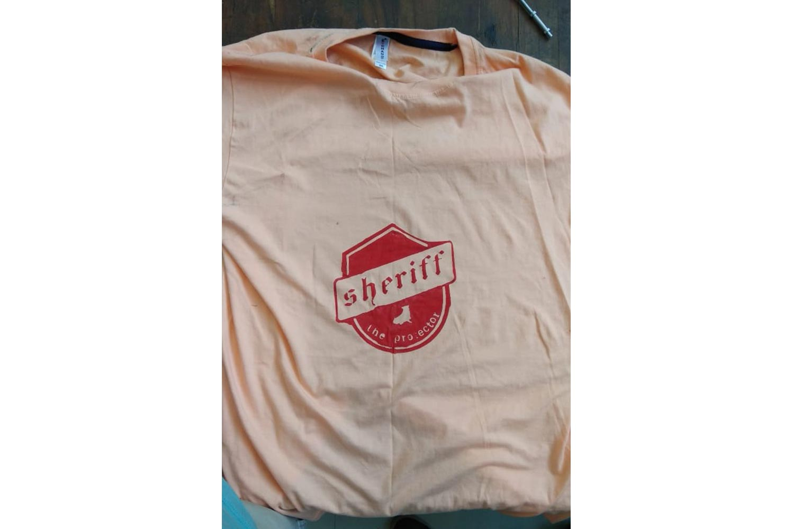

Original files
Week 18 : Assignment
for the wild card week i decided to do Screen printing.
Screen printing is the process of pressing ink through a stenciled mesh screen to create a printed design. It’s a popular technique used in a whole range of different industries. Screen printing is an effective technique for creating bold canvases, posters and artwork, but the method can also be used to print fabrics and textiles, so it's great for creating all sorts of custom clothing and products.
What is Screen printing?
Screen printing is the process of transferring a stenciled design onto a flat surface using a mesh screen, ink and a squeegee. Fabric and paper are the most commonly screen-printed surfaces, but with specialized inks it’s also possible to print onto wood, metal, plastic, and even glass. The basic method involves creating a stencil on a fine mesh screen, and then pushing ink (or paint, in the case of artwork and posters) through to create an imprint of your design on the surface beneath.
The process is sometimes called 'silk screening' or 'silk screen printing'
process
Create Design
First i need to have the design to print on the T-shirt ! i cut my logo i made on week 3.

Cutting design In vinyl Cutter
Detail information about Vinyl cutter can be seen on the week 4
Removing material
After i cut my logo , i have to decide which part of it i want to show on the T-shirt. in week 4 i removed material i didn’t wanted to be in logo , but in screen printing i have to create Negative part which will create Positive print on T-shirt. i have to remove Material from places where i want paint to penetrate .

Use of transfer tap
Transfer tap is used to Remove material. to see how you can do it , you can check week 4.
Negative part
As i told i have to create negative part on logo and create spaces from where material into T-shirt.

put the Negative on Screen
The silk screen in silk screen printing is a metal or wooden frame with a fine mesh fabric stretched over the top. Traditionally, this mesh was crafted from silk thread, but nowadays this has been superseded by polyester fabrics, which offer the same performance for a lower price. The thickness and thread count of the mesh can be chosen to suit the texture of the surface or fabric being printed, with smaller spaces between threads allowing for greater detail in the print. Once the screen has been coated in emulsion and exposed, it is ready to be used as a stencil.After the screen printing process has finished, it can be washed and re-used.

source
Procedure
This is How I will do it , it is better to understand now , and explains why i need negative pattern

Putting negative on the Screen
Prepared screen
Maharshi's help
He was helping me to understand the procedure more better way.
Prepared Screen
straightening the T-shirt
It is very Important to have perfect straight base , otherwise ink will flow here and there and print will fail
 Preparing Paint
Second important step was to prepare good water and paint mixture. Paint should have Optimum viscosity , so it will be enough to penetrate on T-shirt and light enough so it can flow on the Screen.
Ready for Print

Ink is pressed
The screen is lowered down onto the printing board. Ink is added to the top end of the screen, and a squeegee is used to pull the ink along the full length of the screen. This presses the ink through the open areas of the stencil, imprinting the design on the product underneath.
Output
Output was not good , Paint spreaded on the T-shirt, well knew the procedure now and i will able to do it on My one better wasy.
prepared for printing
Prepared Paint

Output
This is my output , it went quite well for me !
Conclusion
Week was Amazing ,i get to learn new stuff this week ! Screen printing demands both practice and patience but it is very interesting field and kind of easy way to making money, people like hand printed T-shirts.